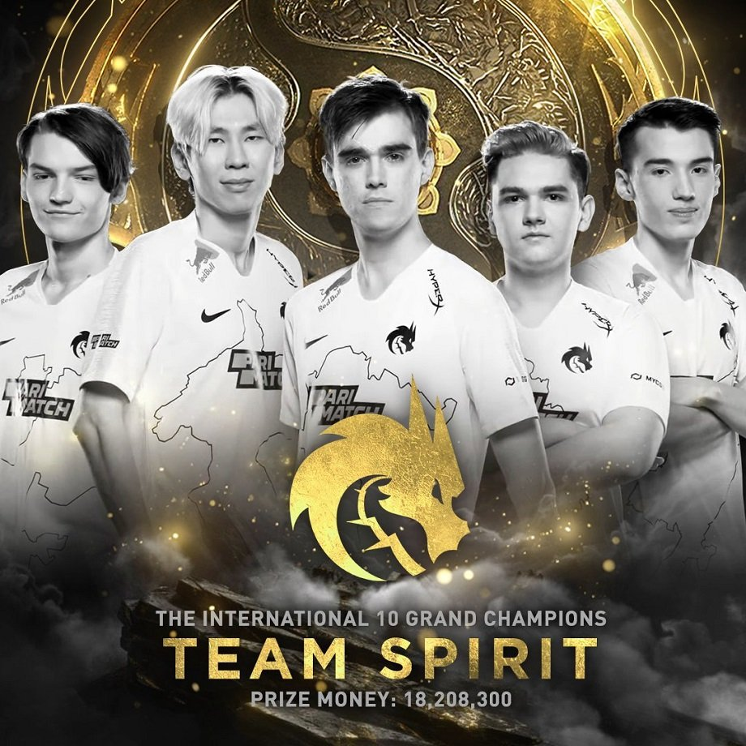
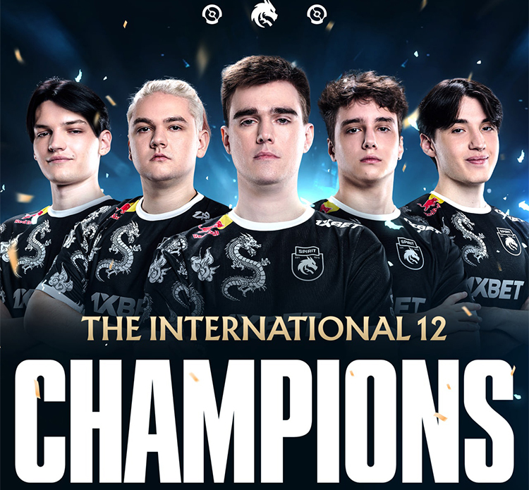
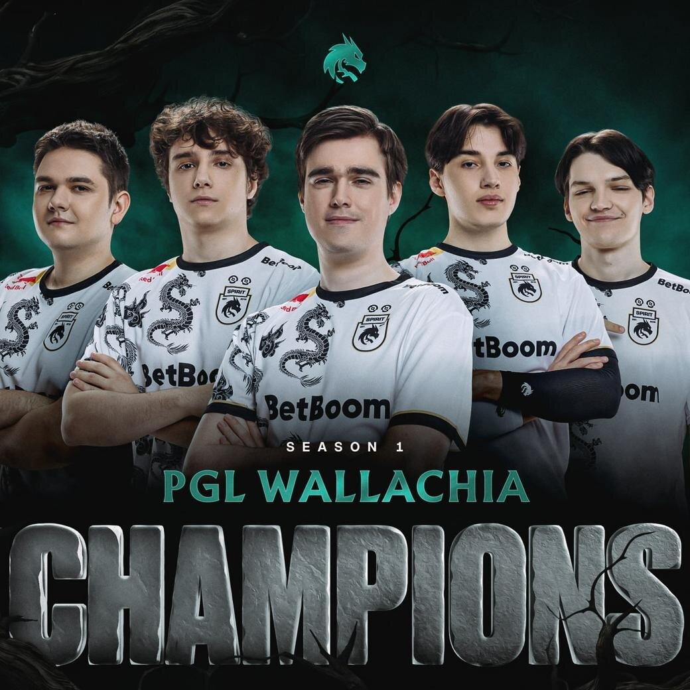

История

В декабре 2020 года команда подписала состав Yellow Submarine, состоящий из игроков Ильи "Яторо" Мулярчука, Александра "TORONTOTOKYO" Хертека, Магомеда "Collapse" Халилова и Ярослава "Miposhka" Найденова, а Мирослав "Мира" Колпаков позже присоединился к составу в преддверии восточноевропейских отборочных к The International 2021. Там состав обыграл Team Empire со счетом 3-2 в упорной серии, чтобы пройти в главный турнир.
На главном турнире команда обеспечила себе место в верхней сетке после того, как одержала 10 побед при 6 поражениях на групповом этапе, где им предстояло встретиться с Invictus Gaming. Там команда проиграла серию со счётом 2:1 и опустилась в нижнюю сетку, где совершила чудо, выйдя в финал после победы над двукратными чемпионами OG, Virtus.pro, команда, которая отправила их в нижнюю сетку Invictus Gaming, и Team Secret встретились с PSG.LGD в гранд-финале. В финале Team Spirit выиграла первые две игры, но быстро проиграла следующие две. Чтобы не проиграть серию и не выбыть из турнира, Team Spirit, нуждавшаяся в ещё одной победе, выиграла пятую игру и стала чемпионом мира, заработав в общей сложности 18 208 300 долларов США, что стало самым крупным призом в истории киберспорта. Благодаря этой победе они стали первой командой из Восточной Европы, выигравшей международный турнир после Natus Vincere на первом международном турнире в 2011 году. В честь своей победы команда также снялась в документальном сериале Valve True Sight.

Команда продолжила показывать высокие результаты в сезоне 2022 года, сыграв в серии матчей-реваншей против PSG.LGD. В первом из двух матчей-реваншей команда выиграла PGL Arlington Major со счётом 3–1, а на первом турнире Riyadh Masters заняла второе место, проиграв в финале со счётом 2–0. В итоге команда получила прямое приглашение на The International 2022, заняв 12-е место в Dota Pro Circuit того сезона, где, несмотря на то, что их считали фаворитами, команда заняла 13–16-е места после шокирующего поражения от Boom Esports.
В преддверии сезона 2023 года организация объявила об уходе TORONTOTOKYO, а Денис «Ларл» Сигитов заменил его в составе. В середине сезона состав добился успеха, победив Team Liquid со счётом 3:1 в гранд-финале Riyadh Masters 2023 и получив 5 000 000 долларов США за победу в турнире. Позже команда выиграла свой второй турнир подряд, победив Shopify Rebellion в гранд-финале DreamLeague Season 21. В том же году Team Spirit победила Gaimin Gladiators в гранд-финале The International 2023, став первой командой после OG, которая стала двукратным чемпионом The International.

После серии неудачных результатов в начале сезона 2024 года Team Spirit обыграла Xtreme Gaming со счётом 3–2 в финале первого сезона PGL Wallachia. Организация стала одной из шести команд, получивших прямое приглашение на The International 2024. Однако состав не смог защитить свой титул, проиграв Xtreme Gaming и заняв 9–12-е места на турнире.
В сентябре 2024 года в составе команды произошли значительные изменения: Яторо и Мира покинули состав, чтобы отдохнуть от профессиональной сцены. На их место команда подписала Алана «Satanic» Галлямова и Александра «Rue» Филина из своей академии, а Абдималик «Malik» Сайлау был подписан в качестве замены Collapse до конца года.